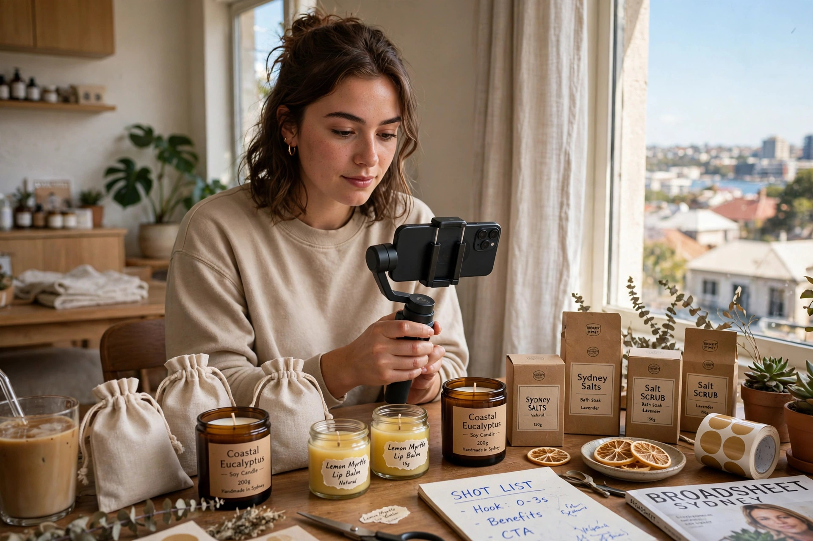

Practical guides to nano influencer marketing in Australia — written for the café, salon, gym, or shop owner who wants locals walking through the door, not just likes on a post.

Nano influencer marketing Australia
What nano creators are, why their engagement beats mega creators, what they cost, and how to run a local campaign without an agency retainer.
27 November 2026 · 5 min read

UGC creators Sydney
Where to search, how to vet a nano creator before you pay them, what to pay, and how to brief them so the content sounds like them — not like an ad.
27 November 2026 · 5 min read

Influencer marketing for cafés Australia
One hero dish, the right local creators, and booked tables instead of likes — what actually fills a café or restaurant, and what it costs.
27 November 2026 · 5 min read

Nano creator cost Australia
Nano rates run $100–$400 a post versus $300–$3,000 for micro — plus the platform fees that turn a cheap creator into an expensive campaign.
27 November 2026 · 5 min read